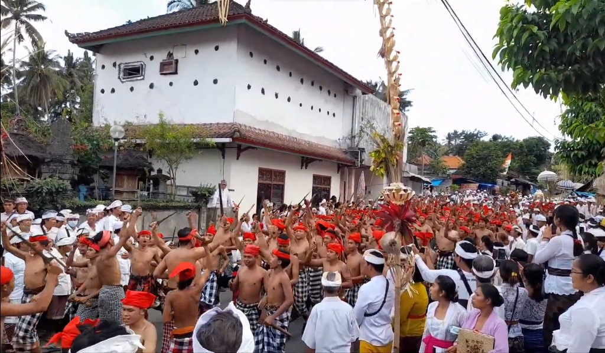

Ritual Spiritual
Tradisi Nyeret
Tradisi Nyeret merupakan ritual unik di mana ratusan pemuda Desa Ababi berjalan kaki sejauh kurang lebih 6 kilometer sambil menghunus senjata keris.
Prosesi ini menjadi simbol keberanian, perlindungan diri, serta penyucian wilayah desa secara spiritual dari bahaya dan energi negatif. Ritme langkah dan kesiapan para pemuda yang menghunus keris menciptakan suasana yang penuh khidmat dan magis.